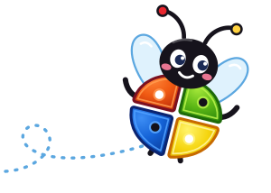
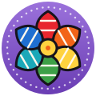
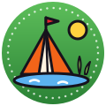
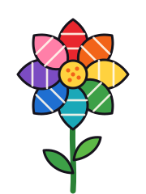
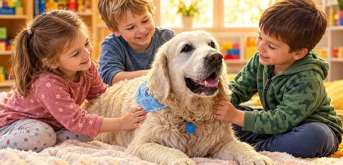
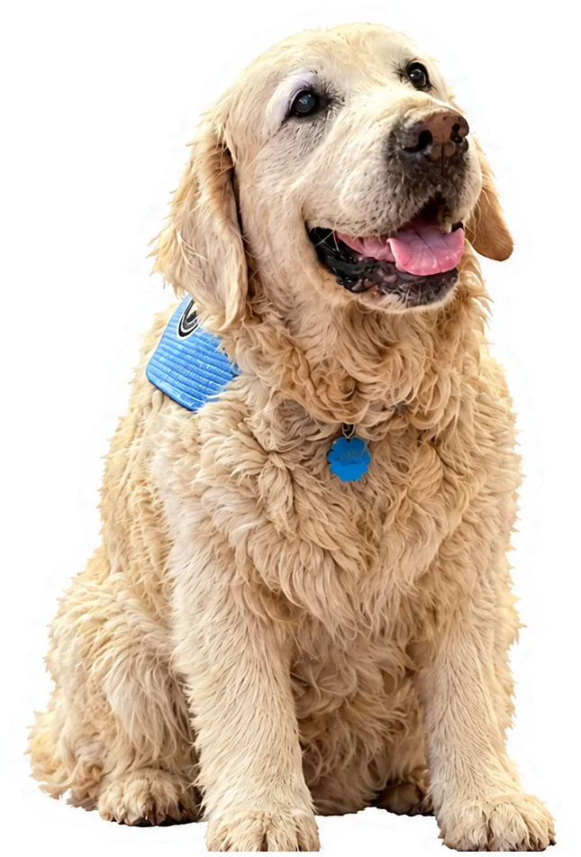

Egyéni fejlesztés
Ha az olvasás, az írás vagy a figyelem nehezebben megy: felmérés után személyre szabott fejlesztés, diszlexia és diszgráfia esetén is.
Tovább: Egyéni fejlesztésCsodabogár Fejlesztő Műhely · Tata · 5-16 éves gyerekeknek
Gyógypedagógiai fejlesztés, szorongásoldó csoportok, iskolaelőkészítés és kutyás foglalkozások Tatán, Píri Margaréta vezetésével. Foglalkozásainkon a gyermek erősségeire támaszkodva, a kis lépések elvét követve segítjük az elakadások feloldását.
Minden egy beszélgetéssel indul.

„Reggelente fáj a hasa, és nem akar iskolába menni. Már azt sem tudom, szimulál-e.”
„Okos gyerek, mégis küszködik az olvasással. Felcseréli a b-t és a d-t.”
„Mindenki azt mondja, majd kinövi. De mi van, ha nem?”
„Nem tudjuk eldönteni, menjen-e iskolába, vagy maradjon még egy évet az óvodában.”
„Az iskolában meg sem szólal, itthon pedig a legkisebb dologtól kiborul.”
„A tanító néni szinte mindennap ír, és én már nem tudom, mit csináljak.”
A fenti helyzetek nagyon sok családban ismerősek. A gyermek nem lusta és nem rossz, talán csak valami most nehezebben megy neki. Az első szülőkonzultáción igyekszem megismerni gyermeküket, Önöket, és az oktatással, neveléssel kapcsolatos gondolataikat, érzéseiket. Így rajzolódhat ki, milyen szükségletek húzódhatnak meg a háttérben, és hogy miben, hogyan tudok gyermeküknek közvetve vagy közvetlenül segíteni.
Margó
Beszéljük megProgramjaink
Van gyerek, akinek egyéni figyelem kell, és van, akinek egy kis csoport, ahol kiderül, hogy a félelmeivel sincs egyedül. Az alábbiakban röviden bemutatjuk programjainkat, melyekről részletesen az aloldalakon olvashatnak.
Ha az olvasás, az írás vagy a figyelem nehezebben megy: felmérés után személyre szabott fejlesztés, diszlexia és diszgráfia esetén is.
Tovább: Egyéni fejlesztésJátékos képességfejlesztés az iskolakezdés előtti évben, hogy az első osztály sikerélménnyel induljon.
Tovább: Iskolaelőkészítő
Feszült, visszahúzódó kisiskolásoknak: mese, játék, alkotás és mozgás egy-egy természeti kép köré építve.
Tovább: MOZAIK szorongásoldó műhelyNagyobbaknak, akiket a félelmeik visszatartanak. Konkrét technikákat tanulnak, hogy lépésről lépésre szembe tudjanak nézni azzal, amitől tartanak.
Tovább: Merész MacskaZafír, a terápiás golden retriever mellett könnyebb megszólalni, barátkozni és bátornak lenni.
Tovább: Kutyás foglalkozások Zafírral
Tíz nyár óta: barátkozás, közös zenélés, mese, alkotás és mezítlábas szabad játék a tó mellett.
Tovább: BarátságtáborTanács tanulási nehézség, viselkedés, szorongás vagy ADHD esetén. Önök ismerik legjobban a gyermeküket, mi ehhez adunk eszközöket.
Tovább: SzülőkonzultációKi vár a műhelyben?
a gyerekeknek csak Margó
A Csodabogár Fejlesztő Műhelyt Píri Margaréta vezeti, és a foglalkozások nagy részét is ő tartja. Ellenőrizendő: ő tartja a legtöbbet?
Két szakmája miatt két irányból látja a gyereket. Gyógypedagógusként azt, ami a tanulásban nehezen megy, pszichológusként azt, ami belül, az érzések szintjén zajlik. A kettő sokszor összefügg: a szorongó gyerek nehezebben figyel, aki pedig sok kudarcot él meg az olvasásban, könnyen elveszíti a kedvét és a bátorságát.
Tíz éve dolgozik tatai családokkal. A foglalkozásain sok a játék, a mese, a zene és az alkotás, a háttérben pedig mindig ott van egy átgondolt terv.
„Lelkesedésből és tervezetten dolgozunk.”
Margó Ellenőrizendő: jóváhagyja az idézetet?
„Kérlek, fogadj el olyannak, amilyen vagyok, s akkor egyre jobb leszek!”Simon András
Ismerjék meg Margarétát
Az első lépés
Nem kell előre tudniuk, melyik program való a gyermeküknek. Ezt együtt találjuk ki.
Pár mondatban elmondják, mi aggasztja Önöket. Beutaló vagy szakértői vélemény nem kell hozzá.
Először Önökkel beszélgetünk, aztán játékos feladatokkal megnézzük, mi megy már könnyen a gyermeknek, és hol akad el. Itt nincs rossz válasz, és nem lehet megbukni. Adat kell: első alkalom hossza, díja
Elmondjuk, mit láttunk, és javaslatot teszünk: egyéni fejlesztés, csoport, vagy először egy szülői beszélgetés. A döntés az Önöké.
Kis lépésekben haladunk, a gyermek erősségeire építve. Rendszeresen elmondjuk, hol tartunk, és mit tehetnek otthon. Adat kell: visszajelzés gyakorisága


Szia! Én vagyok Zafír. Szerdánként várlak játszani!
Bemutatjuk Zafírt
Zafír golden retriever, a Csiga-Biga Mozgás- és Képességfejlesztő Alapítvány terápiás kutyája. A Csodabogár kutyás csoportjaiban a gyerekek már a születésnapját is együtt ünnepelték vele.
Türelmesen kivárja, amíg egy félénk gyerek odamer nyúlni hozzá, és ugyanazzal a nyugalommal fogadja a hangos és a csendes gyerekeket. Az ő jelenlétében a gyerekek könnyebben oldódnak fel, mernek megszólalni és kapcsolódni egymáshoz.
A foglalkozásokat szakember vezeti, Zafír felvezetőjével együtt, és minden alkalomnak megvan a maga fejlesztési célja.
Zárt csoportok, két korosztály. Az időpontok jellemzőek, az aktuális indulásról érdeklődjenek.
Szülők mondták
„Egy évig jártunk a Csodabogárhoz, hogy felkészítsék a fiamat a sulira. Fiam nagyon szeretett oda járni, kedvesek és türelmesek voltak. Az iskolát elkezdte tele sikerélménnyel. Félévi bizonyítványa is kitűnő lett.”
„Csodabogár fejlesztő műhelyt mindenkinek ajánlom. Fiam, aki nem ült meg hosszabb ideig egy feladat felett és nem is érdekelte mert nem tudott oda koncentrálni, itt segítettek neki, hogy megszeresse. Egy évig jártunk a Csodabogárhoz, hogy felkészítsék a fiamat a sulira. Fiam nagyon szeretett oda járni, kedvesek és türelmesek voltak. Idők teltével fiamat egyre jobban érdekelték a feladatok és megült, hogy elvégezze őket. Az iskolát elkezdte tele sikerélménnyel. Félévi bizonyítványa is kitűnő lett. Szeretnénk köszönetet mondani Píri Margarétának a sok kitartó és jó munkáért, valamint Katinak a logopédiáért! Fiam sokat gondol rátok és emleget!”
Ide kerül egy szülő véleménye a MOZAIK csoportról.
Margarétától kérdezendő: MOZAIK-os szülői vélemény engedéllyel
Ide kerül egy szülő véleménye a kutyás csoportról vagy a táborról.
Margarétától kérdezendő: kutyás vagy tábori vélemény
Önök is jártak nálunk? Örülünk, ha megírják a tapasztalataikat. Vélemény írása Adat kell: Google értékelés link
Galéria
Fejlesztő játékok a polcokon, közös alkotások, zene, nyári tóparti napok, és persze Zafír. Így telnek nálunk a délutánok.
Ha egy nehézség hónapok óta tart, ha a gyermek sokat szenved miatta, vagy ha Önök érzik, hogy valami nincs rendben, érdemes megnézetni. Sok minden valóban kinövi magát. Az olvasás, az írás és a szorongás terén viszont a korai segítség sokkal rövidebb és könnyebb utat jelent. Egy beszélgetés után tisztábban fogják látni, kell-e bármit tenni.
Nem kell. Közvetlenül is kereshetnek minket. Ha már van szakértői véleményük (például BTMN vagy SNI), hozzák el, mert a benne lévő javaslatokra tudunk építeni.
Először Önökkel beszélgetünk, aztán játékos feladatokkal ismerjük meg a gyermeket. Hogy a szülő bent marad-e, azt a gyermek korához és kedvéhez igazítjuk. Otthon elég annyit mondani neki, hogy játszani és ügyesedni mennek. Adat kell: az első alkalom menete, hossza
Nem. Hivatalos szakértői véleményt csak az állami pedagógiai szakszolgálat szakértői bizottsága adhat ki. Abban viszont segítünk, hogy eligazodjanak: mikor érdemes vizsgálatot kérni, hogyan készüljenek rá, és mit jelentenek a kapott vélemény javaslatai a mindennapokban. Ellenőrizendő: megfogalmazás, írásos összefoglaló
Az árak programonként eltérnek. Az első beszélgetésen pontosan elmondjuk, mivel járna a gyermekük fejlesztése, és csak ezután döntenek. Adat kell: árak, bérlet, egészségpénztár
Amit Önök és a gyermek elmondanak, az köztünk marad. Az óvodával vagy az iskolával csak akkor vesszük fel a kapcsolatot, ha Önök ezt kérik. Ellenőrizendő: megerősíti-e így
Beszélgessünk
Egy rövid telefon vagy üzenet elég az induláshoz. Meghallgatjuk, mi történik otthon, az óvodában vagy az iskolában, és megmondjuk, miben tudunk segíteni.
Tata, Alkotmány u. 2. tataifejlesztes@gmail.com